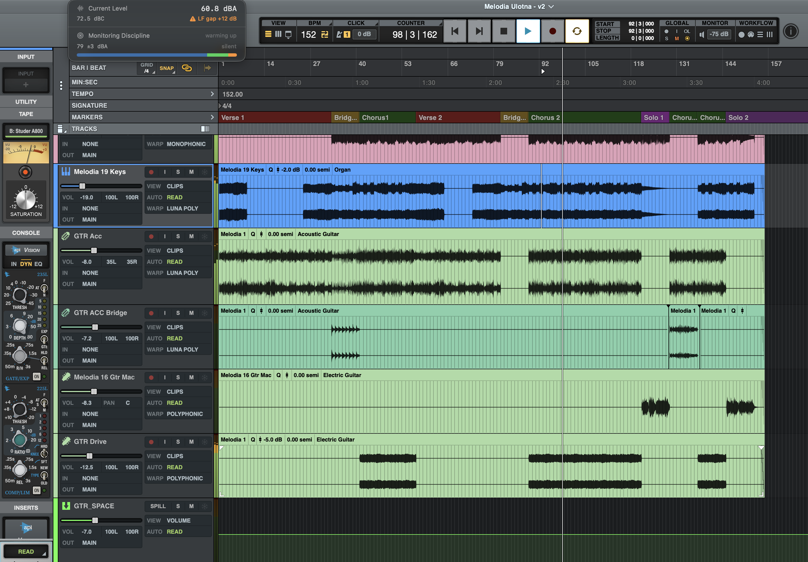
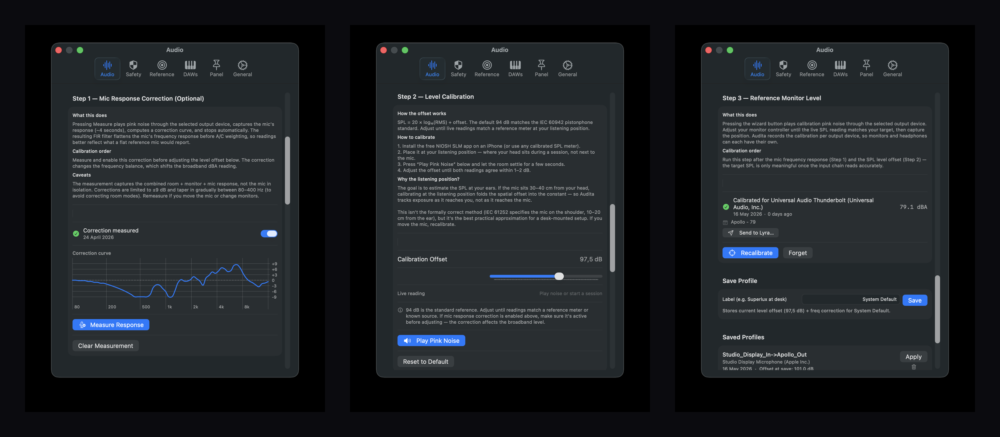
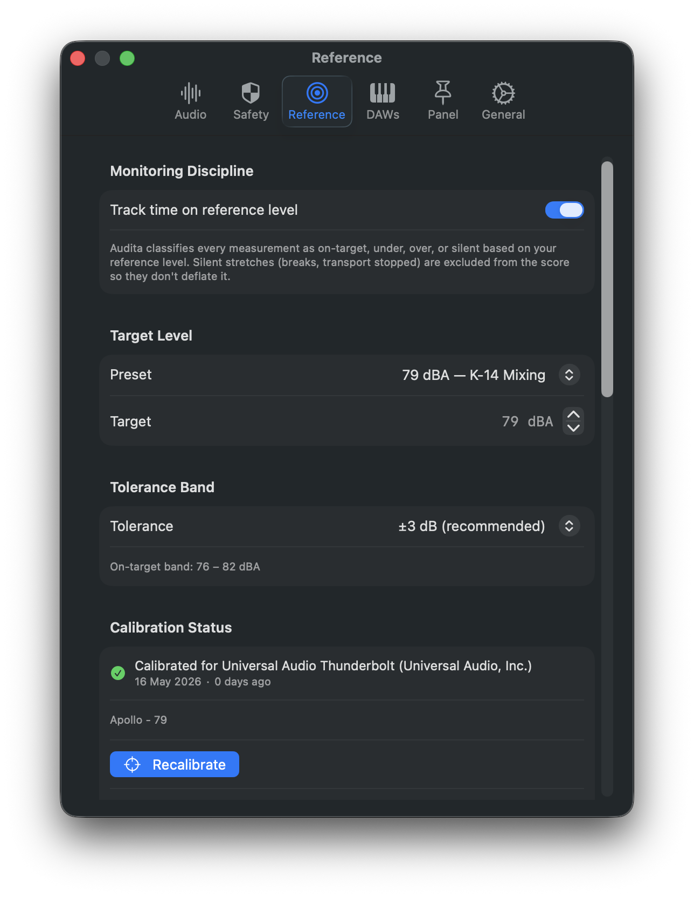
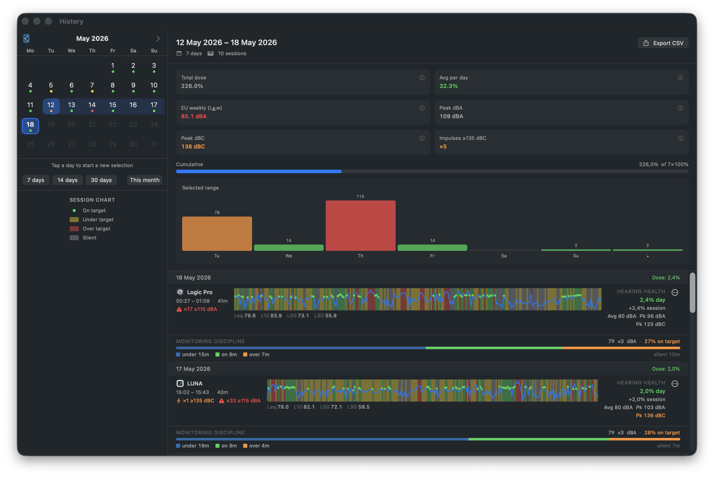

Audita · User guide
Everything Audita does, and how to drive it.
Audita is a menu bar SPL meter and NIOSH hearing-dose tracker for macOS. This page is the canonical user reference. Skim the table of contents to jump to a feature, or read top-to-bottom for the full tour. The full audita:// URL scheme reference lives on a separate page.
1. What Audita does #
Audita is a macOS menu bar app that protects the hearing of audio professionals. It continuously measures the sound pressure level (SPL) reaching a microphone at your listening position and calculates how much of your safe daily hearing budget has been used, using the NIOSH Recommended Exposure Limit (85 dBA reference, 3 dB exchange rate, 80 dBA threshold). It runs passively alongside any DAW, with no conscious interaction required.
One measurement chain feeds two jobs:
- Hearing protection. A-weighted SPL (IEC 61672-1) accumulates into a cumulative dose percentage. Color-coded thresholds, NIOSH-aligned notifications, EU 2003/10/EC peak monitoring on a parallel C-weighted path.
- Monitoring discipline. A separate, optional layer that pins your monitoring level to a calibrated reference (K-14 / K-12 / K-20 / mastering / custom) and warns when your level drifts or sits off-target for too long.
Audita is $19.99 regular, one-time purchase, with a 7-day free trial. macOS 14 (Sonoma) or later.
2. First launch #
On first launch:
- macOS asks for microphone access. Click OK. Audita needs microphone access to measure SPL; the measurement microphone you pick (see below) is the only audio source it reads.
- The Audita icon appears in the menu bar. Click it to open the popover.
- Open Settings → Audio and select your measurement microphone from the input device picker. Defaults to the system default input. Most users pick a small condenser or omnidirectional measurement mic permanently mounted near the listening position.
- Run the 3-step calibration wizard (Settings → Audio). Without calibration, the SPL numbers Audita displays are not in real-world dB.
Audita is agent-only (LSUIElement = true) - it never appears in the Dock or the ⌘-Tab switcher. All interaction happens through the menu bar.
DAW auto-detection
Audita watches for known DAWs to launch and quit, and automatically starts and ends sessions accordingly. Out of the box, 15 DAWs are tracked by bundle ID: Logic Pro, GarageBand, Pro Tools, LUNA, Ableton Live, REAPER, Cubase, Nuendo, Studio One, FL Studio, Bitwig Studio, Audacity, Adobe Audition, Final Cut Pro, DaVinci Resolve.
When the first tracked DAW launches, an Audita session starts. When the last one quits, the session ends and a recap notification fires. Multiple simultaneous DAWs are handled correctly - only the first launch and last quit trigger transitions.
To add a DAW that isn't in the built-in list, open Settings → DAWs → Add Custom DAW and enter its bundle ID and display name. Custom DAWs persist across launches and survive Auris imports.
Menu bar icon states
The icon reflects the current dose level using NIOSH-aligned thresholds and color coding:
| Range | State | Glyph |
|---|---|---|
| 0-40 % | Safe | Green ear outline |
| 40-70 % | Caution | Yellow filled ear |
| 70-90 % | Warning | Orange ear with badge |
| 90 %+ | Danger | Red warning triangle |
Today's dose is persisted to UserDefaults after every measurement, so a quit/relaunch doesn't lose progress. Accumulated dose is stamped with the calendar date and discarded if the date has changed since last launch - each day starts clean at midnight.
3. Menu bar display #
By default the menu bar shows just the dose-state ear glyph. From Settings → General → Menu Bar you can switch to a live SPL readout that updates 10 times a second.
Display modes
| Mode | What it shows |
|---|---|
| Icon | Dose-state ear glyph (default) |
| dBA | Live A-weighted SPL number only |
| dBC | Live C-weighted SPL number only |
| Icon + dBA | Dose glyph followed by the live A-weighted number |
| Icon + dBC | Dose glyph followed by the live C-weighted number |

One-decimal toggle
Settings → General → Menu Bar → Show one decimal formats the number as 85.2 instead of 85. The menu bar width stays stable either way - Audita pre-renders the readout into a fixed-width NSImage canvas (22 pt integer, 38 pt decimal) so the menu bar item doesn't resize between adjacent values like 14 and 15.
Color-coded readout
Settings → General → Menu Bar → Color-code reading by level tints the SPL number according to three configurable thresholds. The defaults follow the NIOSH risk gradient:
| Range | Color |
|---|---|
| Below 70 dB | Green |
| 70-80 dB | Yellow |
| 80-95 dB | Orange |
| 95 dB and above | Red |
The three thresholds (yellow / orange / red) are individually configurable. Their steppers cross-clamp to keep the bands monotonic - you can't set red below orange. Colors use NSColor.system{Green,Yellow,Orange,Red} so they adapt for accessibility and color-blind palettes.
Em-dash placeholder when stopped
When the audio engine is not running (no session, no active measurement), the readout shows an em-dash placeholder rather than "0 dBA" - a stopped meter is genuinely silent in the room only if you've calibrated against the room noise floor, which most users haven't. The placeholder makes it visually obvious the meter isn't measuring.
4. The dropdown menu #
Click the menu bar icon to open the popover. Two panels: the live measurement panel (default) and the session history panel (accessed via the History button).

License status
"Licensed", "Trial - N days left", or "Trial expired" in red, with an Activate or Manage button alongside.
Active session block
Visible while a session is running (auto-started by a DAW or manually started). Shows the DAW name, elapsed time, running average dBA and peak dBA / dBC, and the dose accrued during this session only. The peak counters (≥115 dBA, ≥135 dBC) appear as red badges when the corresponding EU thresholds have been exceeded.
Live dBA and dBC
Two large numbers showing the smoothed A-weighted and C-weighted SPL at your microphone position. Exponentially smoothed (α = 0.3) for display; dose accumulation uses the unsmoothed per-tick value internally. A dBC − dBA gap indicator appears below when the gap exceeds 6 dB (caution) or 10 dB (warning), flagging significant low-frequency content that A-weighting alone underreports.
Monitoring discipline gauge
When monitoring discipline is enabled and the audio chain is calibrated, a small gauge shows the active reference target (e.g. K-14 / 79 dBA ±3), the live distance from target in dB, and the rolling on-target % for the current session. See Monitoring discipline for the full mechanic.
Today's dose
The cumulative NIOSH dose percentage for the current calendar day, color-coded by zone (green / yellow / orange / red). Below it, peak counters for today's ≥135 dBC and ≥115 dBA events when non-zero. The dose resets at midnight.
Footer: pin and history
Two buttons at the bottom:
- Pin icon - opens or closes the floating measurement panel. The icon swaps between an outline pin (closed) and a filled accent-tinted pin (open).
- History - opens the second panel of the popover, showing the 7-day bar chart and chronological session list. Click History window at the top to open the standalone resizable history window with calendar navigation and 30-day range stats.
Start Session / End Session
Manual session control. Useful when you're not in a tracked DAW (e.g. mixing in iZotope RX, listening on Spotify, scoring against a reference track in QuickTime). The session records exactly like an auto-detected one but is labelled Manual until you give it a custom name.
Settings…
Opens the Settings window. Six tabs: Audio (device, calibration), Safety (conservative dose, peak monitoring), Reference (target dBA, alerts), DAWs (custom bundle IDs), Panel (floating panel sections), General (menu bar display, launch at login, notifications, Auris import).
5. Floating measurement panel #
A detached always-on-top window that keeps the measurement panel visible while you work in another app. Opened via the pin icon in the menu bar footer; dismissed via the same pin or by double-clicking the panel surface.

What it shows
All the same data the menu bar popover shows, configurable per section in Settings → Panel:
- Hearing dose (today's NIOSH dose with color)
- Current SPL (dBA + dBC)
- Monitoring discipline (target, distance, on-target %)
- Leq / Ln statistics
- Active session details
- Today's summary (dose, peaks)
All sections default on. Sections that depend on context (no active session, monitoring disabled, audio not running) auto-hide regardless of the toggle.
Behaviour
- Always on top. Floats above other windows at
NSWindow.Level.floating. - Follows you across spaces and full-screen apps. Joins all spaces; visible whether you're in a DAW's full-screen mode, on a different Mission Control space, or on a secondary display.
- Borderless and translucent. No title bar, no traffic lights. The SwiftUI material background draws edge-to-edge.
- Liquid Glass on macOS 26+. Uses the system's translucent
.glassEffectmaterial and inherits the color of whatever is behind it. On macOS 14-25 it falls back to.regularMaterial- still translucent, but flat. - Resizable, position-remembered. Drag any edge to resize. The frame is auto-saved between launches.
- Auto-resize on section toggle. Toggling sections in Settings → Panel re-fits the window without leaving a gap; the top edge stays where you put it so the resize feels anchored.
6. Calibration #
Audita's measurement chain is only as accurate as its calibration. Settings → Audio presents calibration as a numbered 3-step journey because the steps depend on each other: Step 2 only matters if Step 1 has flattened the mic, and Step 3 only matters if Steps 1 and 2 have made the broadband level reliable.

TL;DR. Run Step 1 once per mic. Run Step 2 every time you move the mic or change the gain. Run Step 3 once per output device (per pair of monitors, per pair of headphones).
Step 1 - Mic frequency response correction (optional)
Most desk-mounted measurement mics, talkback channels on audio interfaces, and onboard laptop mics have non-flat frequency responses that bias dBA readings by 1-5 dB depending on programme content. Step 1 measures your mic's actual frequency response with pink noise and an FFT, then derives a corrective FIR filter that flattens the input chain before the A and C weighting filters run.
- Place the measurement mic at your normal listening position - where your head sits during a session.
- Turn your monitors to a normal listening level - loud enough to dominate room noise, not so loud the mic clips.
- Settings → Audio → Step 1 → Measure.
- Pink noise plays for ~4 seconds. The mic captures the response. The FIR is computed and saved automatically.
- The status row updates to Active.
Re-run when: you change the measurement mic, move it to a meaningfully different position, or change room treatment in the listening area.
Step 2 - Level offset (the main one)
This is the single number that maps 20·log₁₀(digital RMS) to real-world dB SPL. The default 94 dB matches the IEC 60942 pistonphone standard - a calibrator that produces a 1 kHz tone at exactly 94 dB SPL. If you have a pistonphone, place it on the mic and adjust the offset until the live reading shows 94 dBA. For everyone else, calibrate against an iPhone running the free NIOSH SLM app (independently validated to ±2 dB):
- Install NIOSH SLM on iPhone.
- Place the iPhone at your listening position - where your head would be - not next to the measurement mic.
- Play pink noise (or any continuous broadband content) through your monitors at a typical listening level.
- Open Settings → Audio → Step 2. The live SPL reading is shown next to the offset slider.
- Note the difference: NIOSH reads
XdBA, Audita readsYdBA. - Adjust the offset slider by
(X − Y). So if NIOSH says 78 and Audita says 72, increase the offset by 6. - Repeat until both meters agree to within 1-2 dB on pink noise, music, and voice.
Right under the offset slider is a free-text Mic Location field. Use it to record the physical setup ("Earthworks M30 at LP, 1.2 m behind monitors, 38 cm above desk, gain at unity"). It's stored alongside the offset so you can reproduce or cross-check the calibration weeks later.
Why the listening position, not next to the mic? The goal of dose tracking is to estimate the SPL at your ears, not at an arbitrary point in the room. Your measurement mic is a proxy for your ears - if it sits 30-40 cm away from where your head actually is, there will be a small but real difference in level due to distance and room reflections. Calibrating with the iPhone at the listening position folds that spatial offset into the calibration constant. This is not the formally correct method (IEC 61252 specifies the mic on the shoulder, 10-20 cm from the ear), but it's the closest practical approximation for a desk-mounted setup. If you move the mic, recalibrate.
Step 3 - Reference monitor level (per output device)
Steps 1 and 2 establish that what Audita measures matches reality. Step 3 captures which physical knob position on your monitor controller produces your target reference level - and stores that record per output device UID, so monitors and headphones each carry their own calibration.

- Settings → Audio → Step 3 → Run Calibration Wizard.
- Pink noise starts playing through the selected output device. The live SPL is shown alongside your target dBA (set in Settings → Reference, defaulting to 79 dBA / K-14).
- Adjust your physical monitor controller until the live SPL matches the target. Take your time - this is the moment that defines what "K-14" means on your rig.
- Click Capture. Pink noise stops; the position is held so you can verify it before saving.
- Type a short note describing the controller position (e.g. "Apollo knob at 11 o'clock, monitors L+R at 0 dB on the desk panel").
- Click Save. The record is persisted; the card shows a green checkmark.
Audita stores the captured measuredDBA alongside the target for honesty - if you aimed for 79 but the closest knob detent gave 80.4, that's recorded. The discrepancy is shown in the saved-record card so you can decide whether to live with it or fine-tune.
Re-run when: different output device (monitors → headphones, or you switched monitor pairs), you moved a knob and forgot to put it back, you changed monitor placement or room treatment, or you added/removed a hardware level pad.
Calibration profiles
If you work in multiple physical setups - studio desk, mobile rig with headphones, second room - saving a named profile that captures Step 1 (FIR) + Step 2 (offset) lets you switch between them in one click. Settings → Audio → Calibration Profiles has a save button and a picker. The active profile name is shown in the menu bar popover.
Step 3 records are intentionally not part of profiles - they're keyed by output device UID, which already does the right thing across setups. A profile says "this is my mic and offset for this rig"; the current output device determines which Step 3 target applies.
7. Monitoring discipline #
A separate, optional layer on top of dose tracking that helps you mix and master at a stable, calibrated reference level - and warns you when you've drifted off it.
Hearing protection (the dose calculation) tells you how dangerous today's listening was. Monitoring discipline tells you how disciplined today's listening was. Different questions, different answers. A 12-hour day at 70 dBA produces zero NIOSH dose but is also zero K-14 mixing time.
Reference targets
Audita ships with four presets in Settings → Reference, plus a Custom option:
| Standard | Target | Where it's used |
|---|---|---|
| Mastering | ~73 dBA | Critical listening, low-level detail work |
| K-14 | 79 dBA | Bob Katz mixing reference (default) |
| K-12 | 83 dBA | Broadcast / loudness-targeted mixing |
| K-20 / Dolby / SMPTE | 85 dBA | Film, theatrical, reference-loudness mix stages |

On-target percentage
Every SPL tick (10 Hz) is classified into one of four zones:
| Zone | Condition |
|---|---|
| Silent | dBA < 50 OR dBA < (target − 30) - nothing meaningful is playing |
| Under | (silent floor) ≤ dBA < (target − tolerance) |
| On-target | (target − tolerance) ≤ dBA ≤ (target + tolerance) |
| Over | dBA > (target + tolerance) |
The on-target % reported in the menu bar's Monitoring Discipline section is:
on_target % = on_target_seconds / (under + on_target + over) × 100Silent time is excluded from the denominator - breaks don't penalise your discipline score. A session where you mixed for 90 minutes (80 % on target) and then took a 30-minute break still reports 80 %. The metric is suppressed (shown as "-") until at least 30 seconds of non-silent monitoring time has been recorded.
The drift detector
Drift is the slow, unconscious creep of monitoring level upward over a long session. Your ears adapt, you compensate, you get louder, the cycle continues. Audita catches this in the background.
- Ten minutes after the session begins, Audita snapshots the current rolling 30-minute Leq as the session baseline.
- From then on, the rolling 30-min Leq is compared against that baseline on every 1 Hz tick.
- When the rolling Leq exceeds the baseline by ≥3 dB, a stopwatch starts.
- If the elevated condition persists for ≥5 continuous minutes, the alert fires.
- The alert is one-shot per session - once you've been told you're drifting, you won't be told again until the next session starts. The 30-min snooze action defers any future drift warnings.
Why these values: 10 min for the baseline lets the rolling Leq settle; 3 dB is perceptually significant (a doubling of acoustic power) and matches the NIOSH exchange rate; 5 minutes filters transient excursions like a single loud passage or a quick A/B at higher volume.
The off-target detector
Drift is about change. Off-target is about intent. You can be totally stable for 30 minutes and still be 5 dB below your stated target the whole time. The off-target detector asks: was that intentional?
- Every 1 Hz tick, the current dBA is classified against the alert tolerance band (separate from, and wider than, the on-target tolerance - default ±5 dB vs ±3 dB).
- Classifications fill a rolling buffer trimmed to the user-configured window (default 15 minutes).
- The alert fires when the window is full, and at least 50 % of it was active monitoring (we don't ping you on a break), and at least 90 % of that active time was off-target (the deviation has to be persistent).
- The notification reports the dominant direction: below target or above target.
- One-shot per session, with a 30-min snooze.
Configurable in Settings → Reference → Alerts
- Drift alert - on/off.
- Off-target alert - on/off, plus window (5 / 10 / 15 / 30 / 60 min), tolerance (±3 / ±5 / ±10 dB), and direction (under-only, over-only, both).
Snooze is routed by category
Snoozing a drift alert silences future drift alerts only - dose alerts still fire. Snoozing an off-target alert silences future off-target alerts only. Snoozing a dose / peak / sustained-SPL alert silences those collectively but leaves drift and off-target alone. A user who's mid-mastering at a level intentionally below K-14 can silence off-target alerts without losing the safety net of dose alerts.
When monitoring discipline is meaningful (and when it isn't)
Meaningful when: you've completed all three calibration steps for the current output device, you're working at a roughly stable level (mixing, mastering, music creation), and the mic hasn't moved.
Not meaningful when: you're tracking and the SPL is all over the place by design, you're A/B-ing at multiple levels intentionally, or the output device has changed since the last Step 3 calibration. In those cases, just disable monitoring discipline in Settings → Reference (the toggle at the top of the tab). Tracking continues; the menu bar section disappears; alerts don't fire.
8. Sessions & DAW detection #
A session is a contiguous span of recorded measurement. Each session captures start and end time, the DAW that triggered it, average dBA, peak dBA and dBC, peak impulse counts, the dose accumulated during that session only, and sparse SPL readings taken every 60 seconds.
How sessions start and end
- Auto. The first tracked DAW launch starts a session. The last tracked DAW quit ends it. Multiple simultaneous DAWs are correctly handled (only the first/last transitions trigger).
- Manual. Menu → Start Session and End Session. Use when you're working outside a tracked DAW.
- URL.
audita://session/startandaudita://session/end. See the URL scheme reference.
Session recap notification
When a session ends, Audita fires a recap notification: "This session used X.X% of your daily dose. Running total: Y.Y% - Z.Z% remaining today." Sessions with < 0.1 % dose (mic wasn't meaningfully active) are skipped. No action buttons - informational only.
Session history
Sessions persist to ~/Library/Containers/com.headroom.Audita/Data/Library/Application Support/Audita/sessions.json. Sessions older than 30 days are pruned automatically on load.
Two ways to review history:
- History panel in the menu bar popover. 7-day bar chart at the top (each bar is one day, color-coded by dose) plus a chronological session list grouped by date. The chart header shows the EU
L_EX,wweekly exposure level (ISO 9612, in dBA, green/orange/red against the 85 dBA criterion) and a daily average. - History window. Standalone resizable window with a 30-day calendar on the left and six stat tiles on the right (Total dose, Avg per day, EU weekly, Peak dBA, Peak dBC, Impulses ≥135 dBC). Open it from the menu bar popover's History button. Each tile has an ⓘ button with a plain-English explanation.

Peak monitoring (EU 2003/10/EC)
Beyond cumulative dose, Audita monitors for dangerous peak impulses on the C-weighted path. Three thresholds per EU Directive 2003/10/EC:
| Threshold | EU action level | Meaning |
|---|---|---|
| 135 dBC | Lower action value | Hearing protection must be available |
| 137 dBC | Upper action value | Hearing protection must be worn |
| 140 dBC | Absolute ceiling | No exposure permitted - immediate damage risk |
Notifications fire when an impulse exceeds 135 dBC, rate-limited to one per 30 seconds. Peak counts are tracked per session and per day. EU Directive 2003/10/EC also defines a maximum 115 dBA instantaneous A-weighted level - a separate limit from the C-weighted thresholds. A red ≥115 dBA: N badge appears in the active session block, today's summary, and session history rows whenever the count is non-zero. Even a count of 1 indicates a level capable of immediate mechanical hair-cell damage.
Conservative dose mode
Standard dose calculation uses A-weighted levels only. For bass-heavy work (sub-bass mixing, kick tracking, live sound with subwoofers), Settings → Safety → Conservative dose mode uses max(dBA, dBC) for dose accumulation. Each tick, whichever weighting gives the higher reading is used. For mid-range content (speech, acoustic instruments), dBA ≈ dBC and behaviour is unchanged. There is no formal NIOSH or OSHA standard for this approach - it's a maximum-protection option.
9. Pause & resume monitoring (v1.2+) #
There are days when you don't want Audita to count what's playing - you're auditioning loud reference tracks, running a sweep, testing a speaker, or rehearsing in the room and don't want the rehearsal to spend your hearing budget for the working day. Pause halts dose accumulation without ending the active session.
Pause can be triggered three ways:
- Menu bar popover - the in-app pause control (when present in your build).
- URL scheme -
audita://monitoring/pausefor indefinite pause,audita://monitoring/pause?duration=900for a 15-minute timed pause. See the URL scheme reference. - Resume -
audita://monitoring/resumeor the in-app control.
While paused, the SPL feed still runs (the menu bar readout keeps updating) but the dose calculator skips accumulation on every tick. The pause state is checked at 10 Hz, so dose stops accruing within ~100 ms of the pause being requested. A timed pause auto-resumes at the configured deadline.
Pause is a deliberate user choice, not a workaround. If you find yourself reaching for it daily, that's a signal that your monitoring habits are spending the dose - consider re-running Step 3 calibration or tightening your monitoring discipline tolerance rather than pausing through the dose.
10. Send to Lyra - write a calibrated level into a Lyra reference slot #
Lyra is the Headroom menu bar app that controls Apollo Twin X monitor volume via the UA Mixer Engine. Lyra has three Reference Level slots (Ctrl+F10 / F11 / F12). Audita can write the calibrated dB SPL value and the live Apollo monitor position into one of those slots so the slot recalls the exact level you just calibrated.

How to use it
After running Step 3 calibration against an Apollo output device, the saved-calibration card in Settings → Audio → Step 3 grows a Send to Lyra… button. Click it to open the sheet:
- Slot picker - 1, 2, or 3 (Ctrl+F10 / F11 / F12 respectively).
- Name - defaults from your K-System target (79 dBA → "K-14", 83 → "K-12", 85 → "Mix"). Edit freely.
- SPL readout - read-only, the calibrated value about to be stored.
When you confirm, Audita fires lyra://reference/{n}/save?name=…&dBSPL=… and Lyra:
- Reads the live Apollo monitor level (so the slot reflects exactly what Audita just measured against).
- Stores tapered + name + dBSPL together.
- Pops the labeled HUD as confirmation - e.g.
Mix - 85 dB SPL.
Audita does not send the tapered position itself. Lyra reads it directly from the Apollo when receiving the URL, which is exactly the position the user just calibrated against. Audita contributes only name and dBSPL as metadata that Lyra surfaces in its menu and HUD.
Don't have Lyra? The Send to Lyra button is hidden when Lyra isn't installed; a subtle hint links to the Lyra product page instead. Audita works fully without Lyra - it's a cross-app convenience for users who own both. Requires Lyra 1.4 or later.
11. URL scheme & automation #
Audita registers a custom audita:// URL scheme so any tool that can fire a URL can read its state or drive its sessions and pause - Shortcuts, Stream Deck, Keyboard Maestro, Hammerspoon, BetterTouchTool, AppleScript, open from the shell, other apps.
A brief overview:
| URL | What it does |
|---|---|
audita://spl | Read live SPL (dBA, dBC, peak dBA) |
audita://dose | Read today's NIOSH dose and peak counters |
audita://session | Read the active session payload |
audita://state | Aggregated payload (spl + dose + session + pause) |
audita://session/start | Start a manual session (optional ?daw=…) |
audita://session/end | End the current session |
audita://monitoring/pause | Pause dose accumulation (optional ?duration=<seconds>) |
audita://monitoring/resume | Resume monitoring |
All endpoints accept the standard x-callback-url parameters (x-success, x-error) so you can chain Audita into a wider workflow. Read endpoints require an x-success URL to deliver their payload; write endpoints treat both callbacks as optional. Responses use flat snake_case query parameters in plain ASCII - no JSON parsing required on the consumer side.
The full URL reference - every endpoint, every return field, error codes, worked examples for Shortcuts, Stream Deck, Keyboard Maestro, and AppleScript - lives on the API reference page.
12. Importing from Auris #
Audita is the successor to Auris, which was sunset on 2026-05-08. Auris 1.3 shipped with a Move to Audita export modal; Audita 1.0 and later include a first-launch import wizard that reads the exported JSON and brings your data over.
What's imported:
- Session history (up to 30 days).
- Today's accumulated dose.
- Calibration profiles (Step 1 FIR + Step 2 offset).
- Step 3 target calibration records, keyed by output device UID.
- Custom DAW bundle IDs.
- Mic frequency response correction filters.
The wizard runs once on first launch. It can be re-run later from Settings → General → Migration → Import from Auris if you want to bring data over from a second Mac.
Your existing Auris license key and trial state carry across automatically - the Keychain entry is shared by design, so reinstalling Audita on a machine that previously had Auris finds the same trial countdown and license credentials. Existing Auris users do not need to re-pay.
13. Trial & licensing #
Audita is $19.99 regular price, one-time purchase, via Lemon Squeezy. An intro price of $6.99 runs through end-of-day 2026-05-31 for Better Hearing & Speech Month.
Trial
The first launch starts a 7-day free trial with full functionality - every feature, no nags, no watermarks. The trial start date is stored in the macOS Keychain (XOR-scrambled, opaque service identifier), so reinstalling the app does not reset the trial. After 7 days Audita shows a hard-lock window on launch and refuses to run until you activate a license.
The hard lock only fires at launch - if you're already running Audita when the trial expires, nothing happens until your next restart.
Buying
Click Buy Audita in the menu (or the Buy button on the website). Lemon Squeezy emails you the license key after checkout.
Activating
Menu → Activate (or Manage if already licensed) opens the license window. Paste your key and click Activate. Audita calls the Lemon Squeezy API to validate, then stores the key and instance ID in the Keychain. Subsequent launches read from Keychain - no network call needed.
Activation requires an internet connection. Once activated, Audita works fully offline.
Two-machine limit
Each license can be active on up to two Macs. To free a slot, open Audita on the machine you want to release, Menu → Manage License → Deactivate, then activate on the new Mac.
Lost your key?
Check the Lemon Squeezy confirmation email. If you can't find it, email hello@headroomstudio.dev with the address you used at checkout.
Validation
Audita silently re-validates the stored license against the Lemon Squeezy server on each launch. If the server says revoked (refund, deactivation, abuse), the local credentials are cleared and the app drops to trial / expired state. Network failures are silently ignored - the offline case is benefit-of-the-doubt.
14. Updates #
Audita ships with Sparkle (the standard macOS auto-update framework). The app checks headroomstudio.dev/audita/appcast.xml every 24 hours; when a higher build number is found you'll see an update prompt at the next launch (or sooner if a check is in flight).
To check on demand: Menu → Check for Updates…
Updates are signed with EdDSA - Sparkle verifies the signature against the public key embedded in Audita before installing. If the signature doesn't match the download is rejected.
Release notes: headroomstudio.dev/audita/releases.html.
15. Troubleshooting #
No SPL reading - the menu bar shows an em-dash
- Microphone permission. Open System Settings → Privacy & Security → Microphone and verify Audita is in the list and toggled on.
- Input device selected. Open Settings → Audio and confirm the measurement microphone is selected. If you previously selected a device that has since been unplugged, Audita stops measuring gracefully - re-select an available device or plug the original back in.
- Audio engine status. The em-dash means the audio engine isn't running. After granting microphone permission for the first time, quit and relaunch Audita to re-initialise the engine.
Readings are wildly off (off by 20+ dB)
Audita measures relative to the digital full-scale level of your microphone. Without Step 2 calibration, the displayed dB is not in real-world SPL - it's a digital level offset by the default 94 dB pistonphone constant. Run Step 2 against an iPhone running NIOSH SLM to map the digital scale to real-world dB SPL.
dBA and dBC differ by > 10 dB on broadband content
On broadband pink noise, dBA and dBC should be within ~3 dB. A larger gap means your mic has significant low-frequency response that A-weighting alone underreports. Run Step 1 to flatten the mic, then re-verify against pink noise. If the gap persists after Step 1, the mic itself may be the issue (check the cable, preamp, and gain staging).
On-target % stays at "-"
The metric is suppressed until at least 30 seconds of non-silent monitoring time has been recorded. If you've been monitoring for longer and it still says "-", check that the dBA is above the silent floor (50 dBA, or target − 30 dBA, whichever is higher).
Drift alert never fires
The drift detector needs 10 minutes of baseline plus 5 minutes of sustained elevation. A 20-minute session is the earliest it can fire. If you're in a longer session and expected an alert, check that Settings → Reference → Alerts → Drift alert is enabled.
Auris import skipped or didn't find data
Re-run from Settings → General → Migration → Import from Auris. Make sure the Auris export JSON is on the same machine; the wizard expects the file at the path produced by Auris 1.3's "Move to Audita" modal. If you've moved Macs, copy the export file across first.
Trial says expired but I just installed
Reinstalling doesn't reset the trial - the start date is in the Keychain and survives uninstall. This is intentional, and includes data inherited from any prior Auris install on the same machine (the Keychain UUID is shared by design). If you genuinely just downloaded Audita for the first time and it's already expired, the Keychain may have a stale entry. Delete it:
security delete-generic-password -s "B2E1D847-9F3A-4C5B-8E6D-1A7C4F2B9E3D" -a "s.ts.v1"Relaunch - the trial starts fresh.
License says invalid even though I just bought it
Wait 30 seconds and try again - Lemon Squeezy occasionally needs a moment to propagate. If it still fails, double-check that there's no leading/trailing whitespace in the key you pasted. Otherwise email hello@headroomstudio.dev with the key and order number.
Notifications don't appear
Open System Settings → Notifications → Audita and confirm notifications are allowed. For Focus-breaking alerts (warning/danger dose, peak alerts, 115 dBA ceiling, sustained-SPL), enable Settings → General → Notifications → Time Sensitive notifications in Audita and confirm Time Sensitive is allowed in the system Notifications pane.
Sparkle won't show an update prompt
Reset Sparkle's "already checked / already skipped" state:
defaults delete com.headroom.AuditaRelaunch, then Menu → Check for Updates… to force a fresh check. This also clears other UserDefaults - including menu bar display preferences and today's dose - so you'll go back to factory defaults.
16. Reporting bugs & feedback #
Email hello@headroomstudio.dev with what happened, what you expected, and ideally what's in the Console.app logs filtered by Audita.